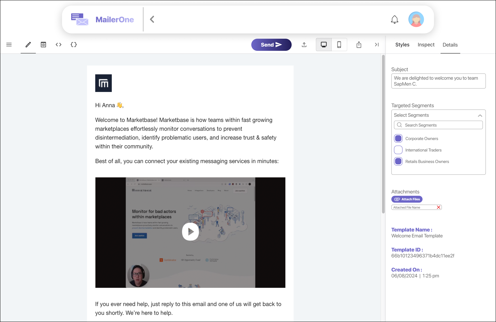
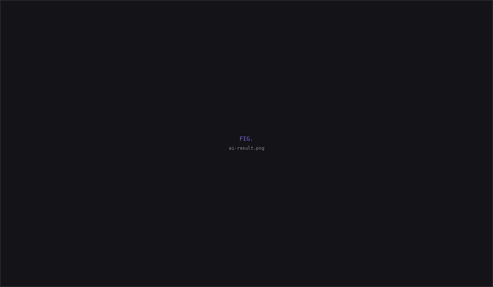

MailerOne: Designing AI-assisted email creation for an email marketing platform.
| Company | Sapmen C |
| Role | UI Design Intern — sole designer on this module |
| Timeline | March – August 2025 (6 months) |
| My scope | Templates module, AI email flow |
| Status | Live — shipped to production |
Overview
MailerOne is an email marketing platform that enables businesses to design, manage, and analyze email campaigns at scale. It combines template management, audience segmentation, campaign analytics, and AI-assisted content generation into a single workflow.
Challenge
MailerOne already had an established design system and product direction. My responsibility was to translate product requirements into production ready interfaces while maintaining consistency across the platform.
Workflow
Templates module
I designed a persistent two-pane layout that let marketers browse, compare, and preview templates while keeping the editor one click away. Keeping both views visible reduced unnecessary navigation and made it easier to work across large template libraries.
Common actions such as renaming, duplicating, and deleting templates were kept lightweight, while destructive actions required confirmation to prevent accidental data loss. Campaign analytics remained attached to each template instead of a separate dashboard, allowing marketers to review performance where decisions were made. Operational settings like subject lines, audience segments, and metadata were separated from content editing to keep the workspace organized.

Designing AI-assisted email generation for marketers
To help marketers draft campaign emails faster, I designed an AI-assisted generation flow directly inside the editor. Instead of treating AI as a separate tool, the experience kept users within their existing workflow while giving them full control over the generated content.
Entry point
The "Generate With AI" button sits in the editor toolbar right where users already are when they want to create something. No separate AI section to find. No context switch.
Prompting
Clicking opens the "Magic by AI" modal. A large preview area dominates the top, with a prompt input at the bottom: "Type your idea.. we'll draft your mail." The user sees their credit balance and cost before they commit.
Generation feedback
The user types a plain language description. A loader appears while the AI works. The credit usage bar updates to show consumption.
Review before insert
The AI returns a fully formatted marketing email consisting of subject line, body copy, product images, and a CTA. Three actions at the bottom: Regenerate, New Prompt, and Insert. The user is never locked into a bad output.
Continue editing
Hitting Insert drops the generated template straight into the editor. The full editing toolbar is available. The AI output becomes a starting point the user owns & not a locked artifact, but a draft they can rewrite and make theirs.
Edge case: credits exhausted
When a user runs out of credits, the modal surfaces a clear message with a "Purchase Credits" button. The credit usage bar reinforces consumption. The flow doesn't dead-end instead it routes them toward buying more.

The decision I lost
I designed the email scheduler with an enable/disable toggle. My reasoning: users should consciously opt into scheduling. Let them decide. Let the interface be transparent about what's happening.
The founder pushed back. His intent is to make users use this feature. If scheduling is opt-in, most users will never use the toggle and try the feature and the platform's value sits unused.
I removed the toggle and the scheduler shipped default-on.
Enable/disable toggle. User opts in consciously. Respects autonomy but risks the feature going unnoticed.
Feature on by default. No toggle. It's part of the workflow, always visible, always active. The feature becomes the experience, not an option within it.
The hardest part of this project wasn't any single screen or interaction, it was making the case for conscious user control and losing that argument.
Reflection
I had a principle I believed in but it differed with the business goals
The toggle story is the thing I keep thinking about. Not because the founder was wrong if a feature genuinely helps users and nobody uses it because it's hidden behind a toggle, then its redundant. Sometimes removing an option is the design decision.
The lesson wasn't that my design was wrong it was that I defended a principle instead of reframing it around the product goal. I argued for user autonomy, while the product was optimizing for feature adoption. Next time, I'd explore solutions that satisfies both.
What I've learned
I'd look for a middle ground before defending a single solution. Instead of arguing for a visible enable/disable toggle, I could have proposed a default-on experience with an opt-out in settings & balancing feature adoption with user control. I learned that product design isn't about winning arguments; it's about finding solutions that satisfy both business goals and user needs.